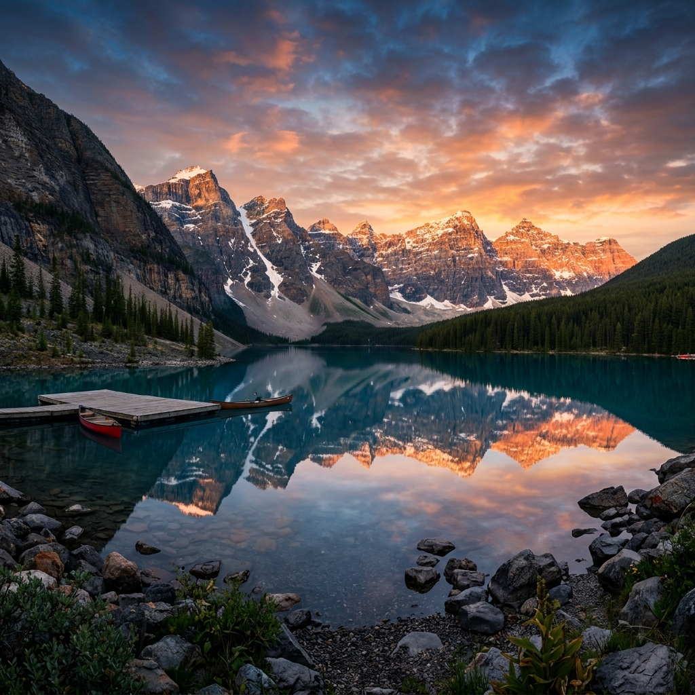

ImageView FittingMode 직관적 이해 가이드
이미지 크기가 600x400 이고, UI View 컴포넌트의 크기가 800x800 (View가 이미지보다 훨씬 큰) 상황을 가정했습니다.
(웹페이지 비례에 맞게 절반 스케일로 축소하여 시각화 되었습니다)
[ 원본 소스 이미지 : 600x400 해상도 ]

1. FIT_KEEP_ASPECT_RATIO
- 비율 유지: O
- 잘림(Crop): X (어두워진 영역 없음)
- 현상: 이미지 전체가 다 보이도록 영역 내부에 맞춰 확대됩니다. 위아래로 레터박스(빈 회색 공간)가 발생합니다.
2. FILL
- 비율 유지: X
- 잘림(Crop): X
- 현상: 비율을 포기하고 빈 공간이 없도록 가로/세로를 100% 억지로 늘려서 채웁니다. 이미지가 왜곡(찌그러짐)됩니다.
3. OVER_FIT_KEEP_ASPECT_RATIO
- 비율 유지: O
- 잘림(Crop): O
- 현상: 비율을 보존한 채로 영역의 구멍이 안 보이게 꽉 채울 때까지 확대합니다. 크기가 커져서 영역 밖으로 삐져나가는 좌/우 테두리(어두운 부분)는 완전히 잘려나갑니다.
4. CENTER
- 비율 유지: O (크기 완전 고정)
- 잘림(Crop): X (이 경우 뷰보다 작으므로)
- 현상: 이미지의 원본 해상도 (600x400) 그대로 화면 (800x800)의 정중앙에 올려둡니다. View가 더 크기 때문에 단 하나도 잘려나가지 않고 중앙에 예쁘게 안착하며 사방에 빈 공간이 남습니다.